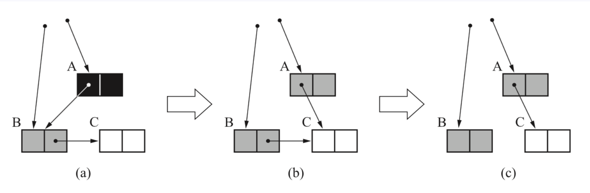
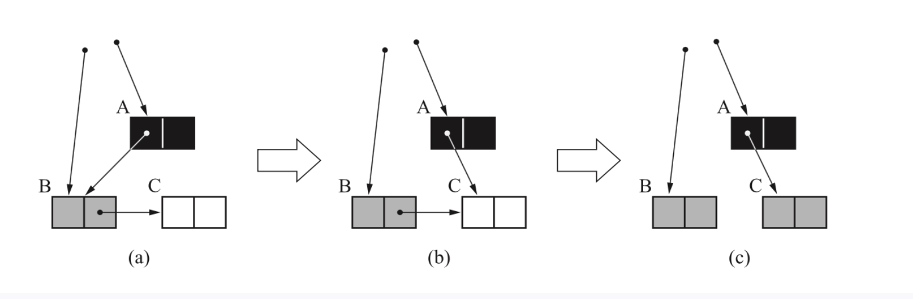

垃圾收集算法

分代收集理论
当前虚拟机的垃圾收集都采用分代收集算法，这种算法没有什么新的思想，只是根据对象存活周期的不同将内存分为几块。一般将java堆分为新生代和老年代，这样我们就可以根据各个年代的特点选择合适的垃圾收集算法。
比如在新生代中，每次收集都会有大量对象(近99%)死去，所以可以选择复制算法，只需要付出少量对象的复制成本就可以完成每次垃圾收集。而老年代的对象存活几率是比较高的，而且没有额外的空间对它进行分配担保，所以我们必须选择“标记-清除”或“标记-整理”算法进行垃圾收集。注意，“标记-清除”或“标记-整理”算法会比复制算法慢10倍以上。
标记-复制算法
为了解决效率问题，“复制”收集算法出现了。它可以将内存分为大小相同的两块，每次使用其中的一块。当这一块的内存使用完后，就将还存活的对象复制到另一块去，然后再把使用的空间一次清理掉。这样就使每次的内存回收都是对内存区间的一半进行回收。

标记-清除算法
算法分为“标记”和“清除”阶段:标记存活的对象,统一回收所有未标记的对象(一般选择这种);也可以反过来,标记出所有需要回收的对象,在标记完成后统一回收所有被标记的对象.它是最基础的收集算法,比较简单,但是会带来两个明显的问题:
- 效率问题(如果需要标记的对象太多,效率不高)
- 空间问题(标记清除后产生大量不连续的碎片)

标记-整理算法
根据老年代的特点特出的一种标记算法，标记过程仍然与“标记-清除”算法一样，但后续步骤不是直接对可回收对象回收，而是让所有存活的对象向一端移动，然后直接清理掉端边界以外的内存。

垃圾收集器

如果说收集算法是内存回收的方法论,那么垃圾收集器就是内存回收的具体实现.
虽然我们对各个收集器进行比较，但并非为了挑选出一个最好的收集器。因为直到现在为止还没有最好的垃圾收集器出现，更加没有万能的垃圾收集器，我们能做的就是根据具体应用场景选择适合自己的垃圾收集器。试想一下：如果有一种任何场景下都适用的完美收集器存在，那么我们的Java虚拟机就不会实现那么多不同的垃圾收集器了。
Serial收集器(-XX:+UseSerialGC -XX:+UseSerialOldGC)
Serial（串行）收集器是最基本、历史最悠久的垃圾收集器了。大家看名字就知道这个收集器是一个单线程收集器了。它的 “单线程” 的意义不仅仅意味着它只会使用一条垃圾收集线程去完成垃圾收集工作，更重要的是它在进行垃圾收集工作的时候必须暂停其他所有的工作线程（ “Stop The World” ），直到它收集结束。
新生代采用复制算法，老年代采用标记-整理算法。

虚拟机的设计者们当然知道Stop The World带来的不良用户体验，所以在后续的垃圾收集器设计中停顿时间在不断缩短（仍然还有停顿，寻找最优秀的垃圾收集器的过程仍然在继续）。
但是Serial收集器有没有优于其他垃圾收集器的地方呢？当然有，它简单而高效（与其他收集器的单线程相比）。Serial收集器由于没有线程交互的开销，自然可以获得很高的单线程收集效率。
Serial Old收集器是Serial收集器的老年代版本，它同样是一个单线程收集器。它主要有两大用途：一种用途是在JDK1.5以及以前的版本中与Parallel Scavenge收集器搭配使用，另一种用途是作为CMS收集器的后备方案。
Parallel Scavenge收集器(-XX:+UseParallelGC(年轻代) -XX:+UseParallelOldGC(老年代))
Parallel收集器其实就是Serial收集器的多线程版本，除了使用多线程进行垃圾收集外，其余行为（控制参数、收集算法、回收策略等等）和Serial收集器类似。默认的收集线程数跟cpu核数相同，当然也可以用参数(-XX:ParallelGCThreads)指定收集线程数，但是一般不推荐修改。
Parallel Scavenge收集器关注点是吞吐量（高效率的利用CPU）。CMS等垃圾收集器的关注点更多的是用户线程的停顿时间（提高用户体验）。所谓吞吐量就是CPU中用于运行用户代码的时间与CPU总消耗时间的比值。 Parallel Scavenge收集器提供了很多参数供用户找到最合适的停顿时间或最大吞吐量，如果对于收集器运作不太了解的话，可以选择把内存管理优化交给虚拟机去完成也是一个不错的选择。
新生代采用复制算法，老年代采用标记-整理算法。

Parallel Old收集器是Parallel Scavenge收集器的老年代版本。使用多线程和“标记-整理”算法。在注重吞吐量以及CPU资源的场合，都可以优先考虑 Parallel Scavenge收集器和Parallel Old收集器(JDK8默认的新生代和老年代收集器)。
ParNew收集器(-XX:+UseParNewGC)
ParNew收集器其实跟Parallel收集器很类似，区别主要在于它可以和CMS收集器配合使用。
新生代采用复制算法，老年代采用标记-整理算法。

它是许多运行在Server模式下的虚拟机的首要选择，除了Serial收集器外，只有它能与CMS收集器（真正意义上的并发收集器，后面会介绍到）配合工作。
CMS收集器(-XX:+UseConcMarkSweepGC(old))
CMS(Concurrent Mark Sweep)收集器是一种以获取最短回收停顿时间为目标的收集器.它非常符合在注重用户体验的应用上使用,它是HotSpot虚拟机第一款真正意义上的并发收集器,它第一次实现了让垃圾收集器与用户线程(基本上)同时工作.
从名字中的Mark Sweep这两个词可以看出，CMS收集器是一种 “标记-清除”算法实现的，它的运作过程相比于前面几种垃圾收集器来说更加复杂一些。整个过程分为四个步骤：
- 初始标记:暂停所有的其他线程(STW),并记录下GC Roots直接能引用的对象,速度很快.
- 并发标记:并发标记阶段就是从GC Roots的直接关联对象开始遍历整个对象图的过程,这个过程耗时较长但是不需要停顿用户线程,可以与垃圾收集线程一起并发运行.因为用户程序继续运行,可能会有导致已经标记过的对象状态发生改变.
- 重新标记:重新标记阶段就是为了修正并发标记期间因为用户程序继续运行而导致标记产生变动的那一部分对象的标记记录(主要是处理漏标问题),这个阶段的停顿时间一般会比初始标记阶段时间稍长,远远比并发标记阶段时间短.主要用到三色标记里的增量更新算法做重新标记.
- 并发清理:开启用户线程,同时GC线程开始对未标记的区域做清扫.这个阶段如果有新增对象会被标记为黑色不做任何处理(三色标记算法)
- 并发重置:重置本次GC过程中的标记数据.

从它的名字就可以看出它是一款优秀的垃圾收集器，主要优点：并发收集、低停顿。但是它有下面几个明显的缺点：
对CPU资源敏感（会和服务抢资源）；
无法处理浮动垃圾(在并发标记和并发清理阶段又产生垃圾，这种浮动垃圾只能等到下一次gc再清理了)；
它使用的回收算法-“标记-清除”算法会导致收集结束时会有大量空间碎片产生，当然通过参数-XX:+UseCMSCompactAtFullCollection可以让jvm在执行完标记清除后再做整理
执行过程中的不确定性，会存在上一次垃圾回收还没执行完，然后垃圾回收又被触发的情况，特别是在并发标记和并发清理阶段会出现，一边回收，系统一边运行，也许没回收完就再次触发full gc，也就是”concurrent mode failure“，此时会进入stop the world，用serial old垃圾收集器来回收
CMS的相关核心参数:
- -XX:+UseConcMarkSeepGC:启用CMS
- -XX:ConcGCThread:并发的GC线程数
- -XX:+UseCMSCompactAtFullCollection:FullGC之后做压缩整理(减少碎片)
- -XX:CMSFullGCsBeforeCompaction:多少次FullGC之后压缩一次,默认是0,代表每次FullGC后压缩一次
- -XX:CMSInitiatingOccupancyFraction:当老年代使用达到该比例时会触发FullGC(默认时92,单位百分比)
- -XX:+UseCMSInitatingOccupancyOnly:只使用设定的回收阈值(-XX:CMSInitiatingOccupancyFraction设定的值),如果不指定,JVM仅在第一次使用设定值,后续则会自动调整
- -XX:+CMSScavengeBeforeRemork:在CMS GC前启动一次minor gc,降低CMS GC标记阶段(也会对很多年轻代一起做标记,如果在minor gc就干掉了很多垃圾对象,标记阶段就会减少一些标记时间)时的开销,一般CMS的GC耗时80%都在标记阶段
- -XX:+CMSParallelInitalMarkEnabled:表示在初始化标记的时候多线程执行,缩短STW
- -XX:+CMSParallelRemarkEnabled:在重新标记的时候多线程执行,缩短STW
亿级流量电商系统如何优化JVM参数设置(ParNew + CMS)
大型电商系统后端现在一般都是拆分为多个子系统部署的，比如，商品系统，库存系统，订单系统，促销系统，会员系统等等。
我们这里以比较核心的订单系统为例

对于8G内存，我们一般是分配4G内存给JVM，正常的JVM参数配置如下：
1 | -Xmx3072M -Xss1M -XX:MetaspaceSize=256M -XX:MaxMetaspaceSize=256M -XX:SurvivorRatio=8 |
之前说过，这样设置可能会由于动态对象年龄判断原则导致频繁full gc。
于是更新JVM参数设置:
1 | -Xmx3072M -Xmn2048M -Xss1M -XX:MetaspaceSize=256M -XX:MaxMetaspaceSize=256M -XX:SurvivorRatio=8 |

这样就降低了因为对象动态年龄判断原则导致的对象频繁进入老年代的问题，其实很多优化无非就是让短期存活的对象尽量都留在survivor里，不要进入老年代，这样在minor gc的时候这些对象都会被回收，不会进到老年代从而导致full gc。
对于对象年龄应该为多少才移动到老年代比较合适，本例中一次minor gc要间隔二三十秒，大多数对象一般在几秒内就会变为垃圾，完全可以将默认的15岁改小一点，比如改为5，那么意味着对象要经过5次minor gc才会进入老年代，整个时间也有一两分钟了，如果对象这么长时间都没被回收，完全可以认为这些对象是会存活的比较长的对象，可以移动到老年代，而不是继续一直占用survivor区空间。
对于多大的对象直接进入老年代(参数-XX:PretenureSizeThreshold)，这个一般可以结合系统看下有没有什么大对象生成，预估下大对象的大小，一般来说设置为1M就差不多了，很少有超过1M的大对象，这些对象一般就是你系统初始化分配的缓存对象，比如大的缓存List，Map之类的对象。
可以适当调整JVM参数如下：
1 | -Xmx3072M -Xmn2048M -Xss1M -XX:MetaspaceSize=256M -XX:MaxMetaspaceSize=256M -XX:SurvivorRatio=8 |
对于JDK8默认的垃圾回收器是-XX:+UseParallelGC(年轻代)和-XX:+UseParallelOldGC(老年代)，如果内存较大(超过4个G，只是经验值)，系统对停顿时间比较敏感，我们可以使用ParNew+CMS(-XX:+UseParNewGC -XX:+UseConcMarkSweepGC)
对于老年代CMS的参数如何设置我们可以思考下，首先我们想下当前这个系统有哪些对象可能会长期存活躲过5次以上minor gc最终进入老年代。
无非就是那些Spring容器里的Bean，线程池对象，一些初始化缓存数据对象等，这些加起来充其量也就几十MB。
还有就是某次minor gc完了之后还有超过一两百M的对象存活，那么就会直接进入老年代，比如突然某一秒瞬间要处理五六百单，那么每秒生成的对象可能有一百多M，再加上整个系统可能压力剧增，一个订单要好几秒才能处理完，下一秒可能又有很多订单过来。
我们可以估算下大概每隔五六分钟出现一次这样的情况，那么大概半小时到一小时之间就可能因为老年代满了触发一次Full GC，Full GC的触发条件还有我们之前说过的老年代空间分配担保机制，历次的minor gc挪动到老年代的对象大小肯定是非常小的，所以几乎不会在minor gc触发之前由于老年代空间分配担保失败而产生full gc，其实在半小时后发生full gc，这时候已经过了抢购的最高峰期，后续可能几小时才做一次FullGC。
对于碎片整理，因为都是1小时或几小时才做一次FullGC，是可以每做完一次就开始碎片整理，或者两到三次之后再做一次也行。
综上，只要年轻代参数设置合理，老年代CMS的参数设置基本都可以用默认值，如下所示：
1 | -Xmx3072M -Xmn2048M -Xss1M -XX:MetaspaceSize=256M -XX:MaxMetaspaceSize=256M -XX:SurvivorRatio=8 |
垃圾收集底层算法实现
三色标记
在并发标记的过程中,因为标记期间应用线程还在继续跑,对象间的引用可能发生变化,多标和漏标的情况就有可能发生.漏标的问题主要引入了三色标记算法来解决.
三色标记算法是把Gc roots可达性分析遍历对象过程中遇到的对象， 按照“是否访问过”这个条件标记成以下三种颜色：
黑色： 表示对象已经被垃圾收集器访问过， 且这个对象的所有引用都已经扫描过。 黑色的对象代表已经扫描过， 它是安全存活的， 如果有其他对象引用指向了黑色对象， 无须重新扫描一遍。 黑色对象不可能直接（不经过灰色对象） 指向某个白色对象。
灰色： 表示对象已经被垃圾收集器访问过， 但这个对象上至少存在一个引用还没有被扫描过。
白色： 表示对象尚未被垃圾收集器访问过。 显然在可达性分析刚刚开始的阶段， 所有的对象都是白色的， 若在分析结束的阶段， 仍然是白色的对象， 即代表不可达。

1
2
3
4
5
6
7
8
9
10
11
12
13
14
15
16
17
18
19
20
21
22
23
24
25
26
27
28
29
30/**
* 垃圾收集算法细节之三色标记
* 为了简化例子，代码写法可能不规范，请忽略
*/
public class ThreeColorRemark {
public static void main(String[] args) {
A a = new A();
//开始做并发标记
D d = a.b.d; //1.读
a.b.d = null; //2.写
a.d = d; //3.写
}
}
class A {
B b = new B();
D d = null;
}
class B {
C c = new C();
D d = new D();
}
class C {
}
class D {
}

多标-浮动垃圾
在并发标记过程中，如果由于方法运行结束导致部分局部变量(gcroot)被销毁，这个gcroot引用的对象之前又被扫描过(被标记为非垃圾对象)，那么本轮GC不会回收这部分内存。这部分本应该回收但是没有回收到的内存，被称之为“浮动垃圾”。浮动垃圾并不会影响垃圾回收的正确性，只是需要等到下一轮垃圾回收中才被清除。
另外，针对并发标记(还有并发清理)开始后产生的新对象，通常的做法是直接全部当成黑色，本轮不会进行清除。这部分对象期间可能也会变为垃圾，这也算是浮动垃圾的一部分。

漏标-读写屏障
漏标会导致被引用的对象被当成垃圾误删除，这是严重bug，必须解决，有两种解决方案： 增量更新（Incremental Update） 和原始快照（Snapshot At The Beginning，SATB） 。
漏标必须要同时满足以下两个条件：
- 赋值器插入了一条或者多条从黑色对象到白色对象的新引用；
- 赋值器删除了全部从灰色对象到该白色对象的直接或间接引用。

增量更新
当黑色对象插入新的指向白色对象的引用关系时， 就将这个新插入的引用记录下来，等并发扫描结束之后， 再将这些记录过的引用关系中的黑色对象为根，重新扫描一次。 这可以简化理解为， 黑色对象一旦新插入了指向白色对象的引用之后， 就把发出引用的对象涂成灰色。
原始快照
当灰色对象要删除指向白色对象的引用关系时， 就将这个要删除的引用记录下来， 在并发扫描结束之后， 再将这些记录过的引用关系中的灰色对象为根，重新扫描一次，这样就能扫描到白色的对象，将白色对象直接标记为灰色(目的就是让这种对象在本轮gc清理中能存活下来，待下一轮gc的时候重新扫描，这个对象也有可能是浮动垃圾)
写屏障
以上无论是对引用关系记录的插入还是删除， 虚拟机的记录操作都是通过写屏障实现的。
给某个对象的成员变量赋值时，其底层代码大概长这样：
1 | /** |
所谓的写屏障，其实就是指在赋值操作前后，加入一些处理（可以参考AOP的概念）：
1 | void oop_field_store(oop* field, oop new_value) { |
写屏障实现增量更新
当对象A的成员变量的引用发生变化时，比如新增引用（a.d = d），我们可以利用写屏障，将A新的成员变量引用对象D记录下来：
1 | void post_write_barrier(oop* field, oop new_value) { |
写屏障实现SATB
当对象B的成员变量的引用发生变化时，比如引用消失（a.b.d = null），我们可以利用写屏障，将B原来成员变量的引用对象D记录下来：
1 | void pre_write_barrier(oop* field) { |
读屏障
1 | oop oop_field_load(oop* field) { |
读屏障是直接针对第一步：D d = a.b.d，当读取成员变量时，一律记录下来：
1 | void pre_load_barrier(oop* field) { |
总结
现代追踪式（可达性分析）的垃圾回收器几乎都借鉴了三色标记的算法思想，尽管实现的方式不尽相同：比如白色/黑色集合一般都不会出现（但是有其他体现颜色的地方）、灰色集合可以通过栈/队列/缓存日志等方式进行实现、遍历方式可以是广度/深度遍历等等。
对于读写屏障，以Java HotSpot VM为例，其并发标记时对漏标的处理方案如下：
- CMS：写屏障 + 增量更新
- G1，Shenandoah：写屏障 + SATB
- ZGC：读屏障
工程实现中，读写屏障还有其他功能，比如写屏障可以用于记录跨代/区引用的变化，读屏障可以用于支持移动对象的并发执行等。功能之外，还有性能的考虑，所以对于选择哪种，每款垃圾回收器都有自己的想法。
为什么G1用SATB？CMS用增量更新？
我的理解：SATB相对增量更新效率会高(当然SATB可能造成更多的浮动垃圾)，因为不需要在重新标记阶段再次深度扫描被删除引用对象，而CMS对增量引用的根对象会做深度扫描，G1因为很多对象都位于不同的region，CMS就一块老年代区域，重新深度扫描对象的话G1的代价会比CMS高，所以G1选择SATB不深度扫描对象，只是简单标记，等到下一轮GC再深度扫描。
记忆集与卡表
在新生代做GCRoots可达性扫描过程中可能会碰到跨代引用的对象，这种如果又去对老年代再去扫描效率太低了。
为此，在新生代可以引入记录集（Remember Set）的数据结构（记录从非收集区到收集区的指针集合），避免把整个老年代加入GCRoots扫描范围。事实上并不只是新生代、 老年代之间才有跨代引用的问题， 所有涉及部分区域收集（Partial GC） 行为的垃圾收集器， 典型的如G1、 ZGC和Shenandoah收集器， 都会面临相同的问题。
垃圾收集场景中，收集器只需通过记忆集判断出某一块非收集区域是否存在指向收集区域的指针即可，无需了解跨代引用指针的全部细节。
跨代引用
所谓跨代引用就是老年代的对象引用了新生代的对象，或者新生代的对象引用了老年代的对象。那对于这种情况我们的GC在进行扫描的时候不可能直接把我们的整个堆都扫描完，那这样效率也太低了。所以这时候就需要开辟了一小块空间，维护这种引用，而不必让GC扫描整个堆区域。
记忆集
记忆集也叫rememberSet，垃圾收集器在新生代中建立了记忆集这样的数据结构，用来避免把整个老年代加入到GC ROOTS的扫描范围中。对于记忆集来说，我们可以理解为他是一个抽象类，那么具体实现它的方法将由子类去完成。这里我们简单列举一下实现记忆集的三种方式：
1.字长精度
2.对象精度
3.卡精度（卡表）
卡表
HotSpot使用一种叫做“卡表”(Cardtable)的方式实现记忆集，也是目前最常用的一种方式。关于卡表与记忆集的关系， 可以类比为Java语言中HashMap与Map的关系。
卡表是使用一个字节数组实现：CARD_TABLE[ ]，每个元素对应着其标识的内存区域一块特定大小的内存块，称为“卡页”。
HotSpot使用的卡页是2^9大小，即512字节

一个卡页中可包含多个对象，只要有一个对象的字段存在跨代指针，其对应的卡表的元素标识就变成1，表示该元素变脏，否则为0.
GC时，只要筛选本收集区的卡表中变脏的元素加入GCRoots里。
卡表的维护
卡表变脏上面已经说了，但是需要知道如何让卡表变脏，即发生引用字段赋值时，如何更新卡表对应的标识为1。
Hotspot使用写屏障维护卡表状态。